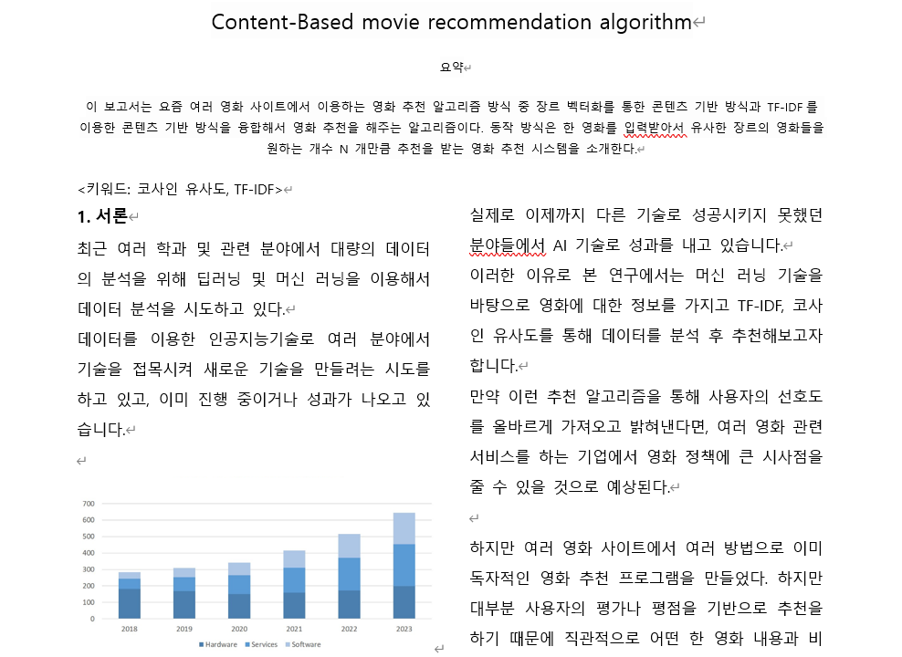
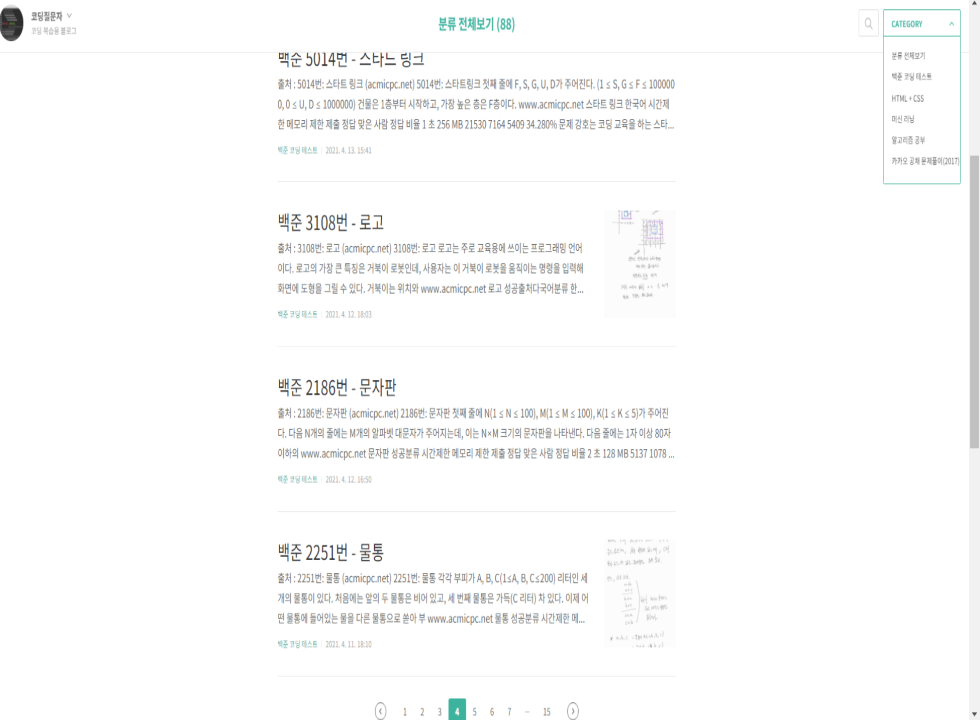
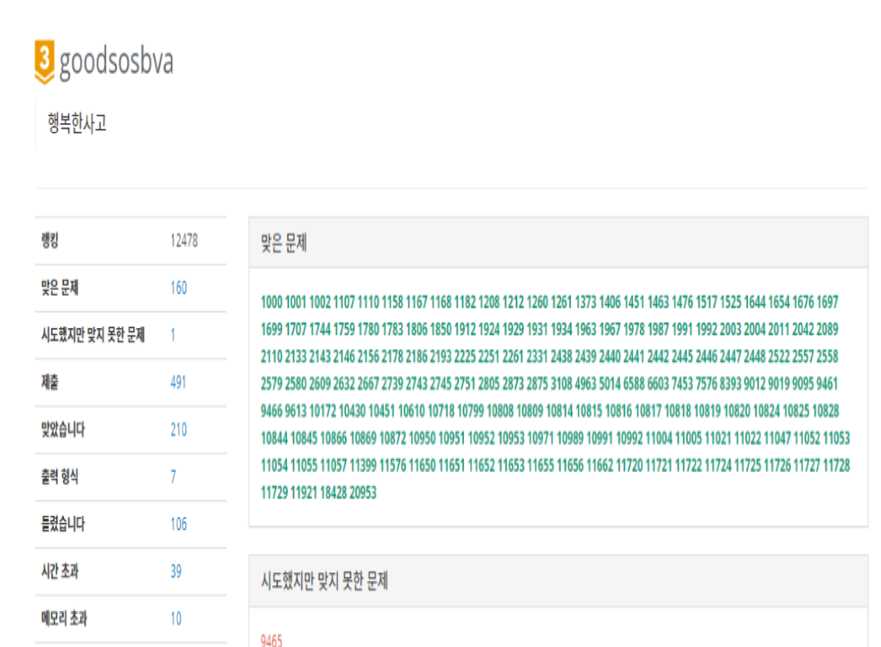
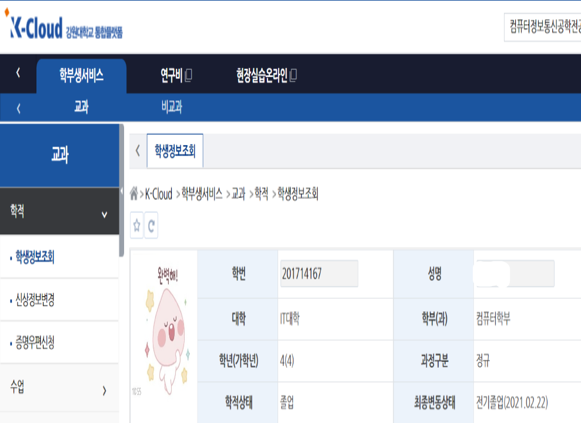
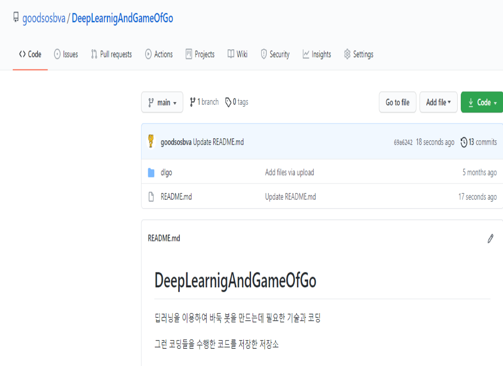

컨텐츠 기반 영화 추천 알고리즘 with TF-IDF
- 저자 권현성
- 발행일 2020-12
- 사양 5쪽 | 188*257mm
서류 유사도의 원리를 이용하여
직관적인 영화추천을 받아 보자!
간단한 알고리즘과 간단한 원리를 이용하여 나만의 영화 추천 프로그램을 구현해보자
간단 명료한 설명이 첨가 되있는 논문으로 직관적인 영화추천 프로그램을 만들 수 있습니다.
- 1
- 2
- 3
- 4
- 5
- 6